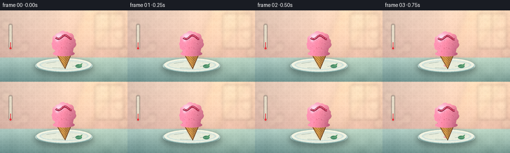
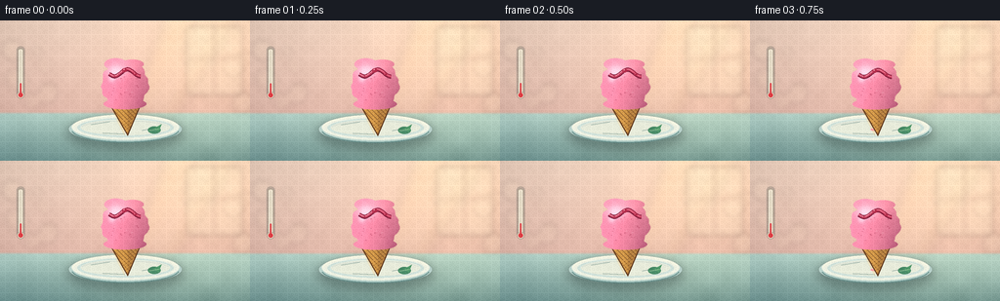
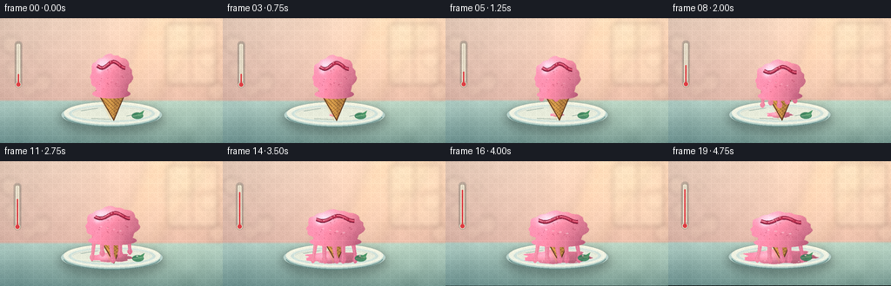
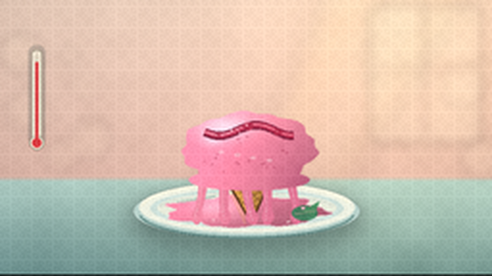
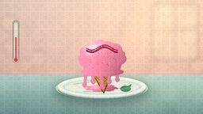
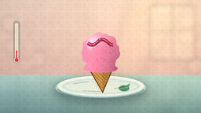
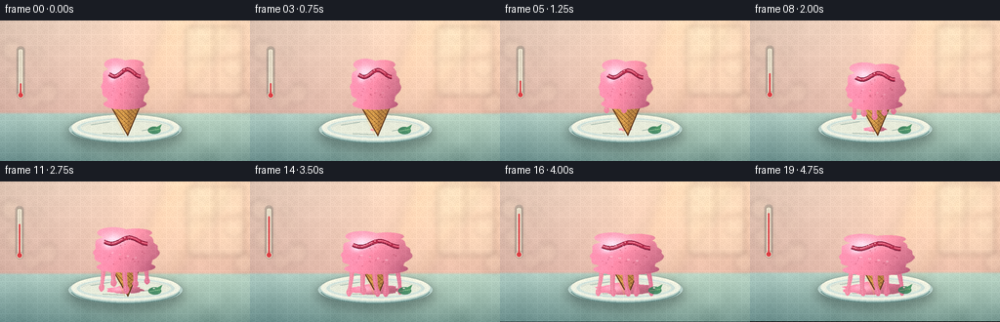

CODING AGENTS AS PIXEL WORLD MODELS
traex/DeepSeek-V4.1-Flash · phygen_099
点击播放 · 原生 RGB 像素
逐轮保存的候选
回放视频、检查图与代码变化。
每份候选均可单独播放。实际图片检查记录在下方工具轨迹中。
候选 01播放与检查图
点击播放 · 原生 RGB 像素


展开代码变化
--- 上一保存版本
+++ 本次保存版本
@@ -0,0 +1,524 @@
+from pathlib import Path
+import math
+
+import numpy as np
+from PIL import Image, ImageChops, ImageDraw, ImageFilter
+
+import artifact_io
+
+
+CASE_DIR = Path(__file__).resolve().parent
+OUT_W, OUT_H = 256, 144
+SCALE = 3
+W, H = OUT_W * SCALE, OUT_H * SCALE
+FRAMES = 20
+
+
+def smoothstep(value):
+ value = np.clip(value, 0.0, 1.0)
+ return value * value * (3.0 - 2.0 * value)
+
+
+def mix(a, b, t):
+ return a * (1.0 - t) + b * t
+
+
+def rgba_layer():
+ return Image.new("RGBA", (W, H), (0, 0, 0, 0))
+
+
+def composite_rgba(base, layer):
+ return Image.alpha_composite(base.convert("RGBA"), layer).convert("RGB")
+
+
+def smooth_noise(width, height, cell, seed):
+ rng = np.random.default_rng(seed)
+ gw = max(3, width // cell + 3)
+ gh = max(3, height // cell + 3)
+ grid = rng.normal(0.0, 1.0, (gh, gw)).astype(np.float32)
+ grid = (grid - grid.min()) / (grid.max() - grid.min())
+ image = Image.fromarray(np.uint8(np.clip(grid * 255.0, 0, 255)), "L")
+ image = image.resize((width, height), Image.Resampling.BICUBIC)
+ return np.asarray(image, dtype=np.float32) / 255.0
+
+
+def radial_glow(x, y, cx, cy, rx, ry):
+ return np.exp(-0.5 * (((x - cx) / rx) ** 2 + ((y - cy) / ry) ** 2))
+
+
+def soft_shadow(base, box, blur=18, color=(42, 50, 48), opacity=105):
+ layer = rgba_layer()
+ draw = ImageDraw.Draw(layer)
+ draw.ellipse(box, fill=(*color, opacity))
+ layer = layer.filter(ImageFilter.GaussianBlur(blur))
+ return composite_rgba(base, layer)
+
+
+def draw_thermometer(base, te):
+ layer = rgba_layer()
+ draw = ImageDraw.Draw(layer)
+ cx = 63
+ top, bottom = 86, 220
+
+ draw.rounded_rectangle(
+ (cx - 13, top - 7, cx + 13, bottom + 14),
+ radius=12,
+ fill=(66, 76, 74, 65),
+ )
+ draw.rounded_rectangle(
+ (cx - 8, top, cx + 8, bottom + 7),
+ radius=7,
+ fill=(247, 239, 218, 235),
+ outline=(154, 146, 127, 210),
+ width=2,
+ )
+ draw.ellipse(
+ (cx - 11, bottom - 2, cx + 11, bottom + 20),
+ fill=(247, 239, 218, 245),
+ outline=(154, 146, 127, 210),
+ width=2,
+ )
+ draw.rounded_rectangle(
+ (cx - 3, top + 8, cx + 3, bottom + 7),
+ radius=3,
+ fill=(224, 214, 193, 255),
+ )
+
+ level = mix(0.22, 0.94, smoothstep(te))
+ mercury_top = int(mix(bottom, top + 12, level))
+ draw.rounded_rectangle(
+ (cx - 2, mercury_top, cx + 2, bottom + 8),
+ radius=2,
+ fill=(220, 61, 67, 255),
+ )
+ draw.ellipse(
+ (cx - 7, bottom + 2, cx + 7, bottom + 16),
+ fill=(220, 61, 67, 255),
+ )
+ draw.line((cx - 5, top + 10, cx - 5, bottom), fill=(255, 255, 249, 160), width=1)
+
+ layer = layer.filter(ImageFilter.GaussianBlur(0.35))
+ return composite_rgba(base, layer)
+
+
+def make_background(te):
+ y, x = np.mgrid[0:H, 0:W].astype(np.float32)
+ xn = x / W
+ yn = y / H
+
+ wall_top = np.array([246.0, 217.0, 198.0], dtype=np.float32)
+ wall_bottom = np.array([226.0, 185.0, 171.0], dtype=np.float32)
+ wall_mix = np.clip(yn / 0.67, 0.0, 1.0)[..., None]
+ wall = wall_top * (1.0 - wall_mix) + wall_bottom * wall_mix
+
+ plaster = smooth_noise(W, H, 38, 41) - 0.5
+ plaster2 = smooth_noise(W, H, 11, 42) - 0.5
+ wall += (plaster * 10.0 + plaster2 * 3.0)[..., None]
+
+ glow = radial_glow(x, y, 676, 68, 218, 180)
+ wall += glow[..., None] * np.array([31.0, 22.0, 7.0])
+ vignette = np.clip(1.0 - 0.12 * (((xn - 0.52) / 0.72) ** 2 + ((yn - 0.48) / 0.82) ** 2), 0.0, 1.0)
+ wall *= vignette[..., None]
+
+ table_top = np.array([174.0, 204.0, 196.0], dtype=np.float32)
+ table_bottom = np.array([94.0, 132.0, 132.0], dtype=np.float32)
+ table_mix = np.clip((yn - 0.64) / 0.40, 0.0, 1.0)[..., None]
+ table = table_top * (1.0 - table_mix) + table_bottom * table_mix
+ table += (smooth_noise(W, H, 55, 17)[..., None] - 0.5) * 13.0
+ table += radial_glow(x, y, 585, 330, 280, 140)[..., None] * np.array([22.0, 18.0, 8.0])
+
+ horizon = 0.658
+ edge = np.clip((yn - (horizon - 0.008)) / 0.018, 0.0, 1.0)[..., None]
+ rgb = wall * (1.0 - edge) + table * edge
+ rgb = np.clip(rgb, 0, 255).astype(np.uint8)
+ image = Image.fromarray(rgb, "RGB").convert("RGBA")
+
+ bokeh = rgba_layer()
+ bdraw = ImageDraw.Draw(bokeh)
+ rng = np.random.default_rng(28)
+ for _ in range(18):
+ bx = float(rng.uniform(0, W))
+ by = float(rng.uniform(10, 258))
+ radius = float(rng.uniform(9, 34))
+ alpha = int(rng.uniform(12, 34))
+ bdraw.ellipse((bx - radius, by - radius, bx + radius, by + radius), fill=(255, 235, 202, alpha))
+ bokeh = bokeh.filter(ImageFilter.GaussianBlur(8))
+ image = Image.alpha_composite(image, bokeh)
+
+ # A soft, widening shaft of late-afternoon light.
+ beam = rgba_layer()
+ bdraw = ImageDraw.Draw(beam)
+ bdraw.polygon(
+ [(520, -40), (748, -40), (534, 305), (382, 305)],
+ fill=(255, 218, 145, 31),
+ )
+ bdraw.polygon(
+ [(604, -25), (704, -25), (505, 301), (430, 301)],
+ fill=(255, 238, 181, 20),
+ )
+ beam = beam.filter(ImageFilter.GaussianBlur(17))
+ image = Image.alpha_composite(image, beam)
+
+ # Window mullion silhouettes remain soft so the dessert stays dominant.
+ window = rgba_layer()
+ wdraw = ImageDraw.Draw(window)
+ wdraw.rounded_rectangle((573, 18, 744, 230), radius=8, fill=(255, 241, 205, 52))
+ wdraw.line((658, 18, 658, 230), fill=(128, 102, 89, 38), width=7)
+ wdraw.line((573, 115, 744, 115), fill=(128, 102, 89, 32), width=6)
+ window = window.filter(ImageFilter.GaussianBlur(8))
+ image = Image.alpha_composite(image, window)
+
+ image = draw_thermometer(image, te)
+ return image.convert("RGB")
+
+
+def make_plate(base):
+ image = soft_shadow(base, (208, 301, 561, 390), blur=17, color=(38, 61, 59), opacity=112)
+ layer = rgba_layer()
+ draw = ImageDraw.Draw(layer)
+ draw.ellipse((211, 292, 558, 376), fill=(183, 209, 202, 255))
+ draw.ellipse((220, 289, 550, 367), fill=(238, 241, 226, 255))
+ draw.ellipse((237, 300, 533, 359), fill=(207, 225, 218, 255))
+ draw.ellipse((248, 305, 522, 353), fill=(231, 235, 218, 255))
+ draw.arc((223, 290, 546, 368), 185, 347, fill=(255, 252, 231, 235), width=5)
+ draw.arc((218, 295, 551, 376), 8, 171, fill=(101, 146, 143, 170), width=4)
+ draw.arc((250, 308, 519, 352), 188, 348, fill=(255, 255, 245, 155), width=2)
+
+ # Small irregular glaze marks make the plate feel ceramic.
+ for sx, sy, ex, ey in [(279, 320, 336, 311), (436, 338, 486, 328), (315, 346, 382, 349)]:
+ draw.line((sx, sy, ex, ey), fill=(157, 187, 181, 38), width=2)
+ layer = layer.filter(ImageFilter.GaussianBlur(0.45))
+ return composite_rgba(image, layer)
+
+
+def make_cone(base):
+ layer = rgba_layer()
+ draw = ImageDraw.Draw(layer)
+ cone_points = [(332, 251), (436, 251), (392, 355)]
+ draw.polygon(cone_points, fill=(203, 145, 68, 255))
+
+ cone_mask = Image.new("L", (W, H), 0)
+ ImageDraw.Draw(cone_mask).polygon(cone_points, fill=255)
+
+ shade = Image.new("RGBA", (W, H), (0, 0, 0, 0))
+ sdraw = ImageDraw.Draw(shade)
+ sdraw.polygon([(332, 251), (383, 251), (382, 355)], fill=(238, 177, 86, 58))
+ sdraw.polygon([(392, 251), (436, 251), (392, 355)], fill=(91, 52, 34, 54))
+ layer = Image.alpha_composite(layer, shade)
+
+ waffle = rgba_layer()
+ wdraw = ImageDraw.Draw(waffle)
+ for offset in range(-130, 300, 14):
+ wdraw.line((320 + offset, 244, 442 + offset, 366), fill=(104, 65, 34, 150), width=2)
+ wdraw.line((470 + offset, 244, 300 + offset, 366), fill=(251, 195, 105, 80), width=2)
+ waffle.putalpha(ImageChops.multiply(waffle.getchannel("A"), cone_mask))
+ layer = Image.alpha_composite(layer, waffle)
+
+ rim = rgba_layer()
+ rdraw = ImageDraw.Draw(rim)
+ rdraw.ellipse((329, 240, 439, 265), fill=(220, 161, 76, 255), outline=(111, 67, 35, 230), width=2)
+ rdraw.arc((335, 244, 433, 261), 188, 350, fill=(255, 214, 132, 190), width=3)
+ layer = Image.alpha_composite(layer, rim)
+
+ outline = Image.new("L", (W, H), 0)
+ odraw = ImageDraw.Draw(outline)
+ odraw.polygon(cone_points, outline=255, width=3)
+ outline = outline.filter(ImageFilter.GaussianBlur(0.4))
+ dark = Image.new("RGBA", (W, H), (90, 52, 30, 0))
+ dark.putalpha(outline)
+ layer = Image.alpha_composite(layer, dark)
+ return composite_rgba(base, layer)
+
+
+def puddle_geometry(te):
+ cx, cy = 384.0, 335.0
+ rx = 13.0 + 107.0 * (te ** 1.35)
+ ry = 3.5 + 20.0 * (te ** 1.2)
+ points = []
+ count = 84
+ for i in range(count):
+ a = 2.0 * math.pi * i / count
+ lump = 1.0 + 0.09 * math.sin(7.0 * a + 1.3) + 0.045 * math.sin(13.0 * a - 0.7)
+ points.append((cx + rx * math.cos(a) * lump, cy + ry * math.sin(a) * lump))
+ return points, cx, cy, rx, ry
+
+
+def make_puddle(base, te):
+ if te < 0.035:
+ return base
+ points, cx, cy, rx, ry = puddle_geometry(te)
+ mask = Image.new("L", (W, H), 0)
+ mdraw = ImageDraw.Draw(mask)
+ mdraw.polygon(points, fill=255)
+
+ y, x = np.mgrid[0:H, 0:W].astype(np.float32)
+ xn = (x - cx) / max(rx, 1.0)
+ yn = (y - cy) / max(ry, 1.0)
+ light = np.clip(0.93 - 0.18 * xn + 0.10 * (-yn), 0.68, 1.08)
+ texture = (smooth_noise(W, H, 9, 53) - 0.5) * 10.0
+ rgb = np.empty((H, W, 3), dtype=np.float32)
+ rgb[..., 0] = 235.0 * light + texture
+ rgb[..., 1] = 128.0 * light + texture * 0.7
+ rgb[..., 2] = 157.0 * light + texture * 0.8
+
+ spec = radial_glow(x, y, cx - rx * 0.35, cy - ry * 0.25, max(rx * 0.25, 4), max(ry * 0.55, 2))
+ rgb += spec[..., None] * np.array([34.0, 51.0, 44.0])
+ rgb = np.clip(rgb, 0, 255).astype(np.uint8)
+ puddle = Image.fromarray(rgb, "RGB")
+ base_rgba = base.convert("RGBA")
+ base_rgba.paste(puddle, (0, 0), mask)
+
+ edge = mask.filter(ImageFilter.MaxFilter(3))
+ edge = ImageChops.subtract(edge, mask.filter(ImageFilter.MinFilter(3)))
+ edge_layer = Image.new("RGBA", (W, H), (255, 211, 221, 0))
+ edge_layer.putalpha(edge.point(lambda v: int(v * 0.33)))
+ return composite_rgba(base_rgba, edge_layer)
+
+
+def body_geometry(te):
+ top = 126.0 + 57.0 * te
+ bottom = 268.0 + 25.0 * te
+ cx = 384.0 + 5.0 * te
+ rx = 72.0 + 30.0 * te
+ cy = (top + bottom) * 0.5
+ ry = (bottom - top) * 0.5
+ return cx, top, bottom, rx, ry
+
+
+def body_mask(te):
+ cx, top, bottom, rx, ry = body_geometry(te)
+ cy = (top + bottom) * 0.5
+ mask = Image.new("L", (W, H), 0)
+ draw = ImageDraw.Draw(mask)
+ points = []
+ count = 180
+ for i in range(count):
+ a = 2.0 * math.pi * i / count
+ lump = (
+ 1.0
+ + 0.036 * math.sin(7.0 * a + 0.8)
+ + 0.021 * math.sin(13.0 * a - 1.2)
+ + 0.011 * math.sin(19.0 * a + 0.2)
+ )
+ points.append((cx + rx * math.cos(a) * lump, cy + ry * math.sin(a) * lump))
+ draw.polygon(points, fill=255)
+
+ # A softly folded base gives the scoop the familiar skirt of melting ice cream.
+ draw.ellipse((cx - rx * 0.91, bottom - 23.0, cx + rx * 0.91, bottom + 9.0), fill=255)
+ draw.ellipse((cx - rx * 0.78, top + ry * 0.46, cx - rx * 0.12, bottom + 4.0), fill=255)
+ draw.ellipse((cx + rx * 0.12, top + ry * 0.50, cx + rx * 0.82, bottom + 3.0), fill=255)
+ return mask.filter(ImageFilter.GaussianBlur(0.55))
+
+
+def drip_geometry(te):
+ cx, top, bottom, rx, ry = body_geometry(te)
+ specs = [
+ (-0.70, 0.10, 78.0, -7.0, 0.3),
+ (-0.40, 0.18, 58.0, 6.0, 1.5),
+ (-0.05, 0.13, 92.0, 10.0, 2.6),
+ (0.30, 0.25, 72.0, -5.0, 4.1),
+ (0.61, 0.30, 60.0, 9.0, 5.0),
+ ]
+ drips = []
+ for dx, delay, max_length, sway, phase in specs:
+ progress = float(smoothstep((te - delay) / max(0.001, 1.0 - delay)))
+ if progress <= 0.001:
+ continue
+ x0 = cx + rx * dx
+ y0 = top + (bottom - top) * 0.82
+ length = max_length * progress
+ y1 = min(350.0, bottom + 10.0 + length)
+ x1 = x0 + sway * progress
+ drips.append((x0, y0, x1, y1, progress, phase, dx))
+ return drips
+
+
+def make_drips(base, te):
+ drips = drip_geometry(te)
+ if not drips:
+ return base
+ mask = Image.new("L", (W, H), 0)
+ mdraw = ImageDraw.Draw(mask)
+ highlights = rgba_layer()
+ hdraw = ImageDraw.Draw(highlights)
+ for x0, y0, x1, y1, progress, phase, dx in drips:
+ steps = max(14, int((y1 - y0) / 2.0))
+ base_radius = 8.5 if abs(dx) < 0.55 else 7.0
+ centers = []
+ for i in range(steps + 1):
+ s = i / steps
+ x = x0 + (x1 - x0) * s + math.sin(s * math.pi * 1.35 + phase) * 2.3 * progress
+ y = y0 + (y1 - y0) * s
+ radius = base_radius * (1.0 - 0.43 * s)
+ radius += 3.8 * math.exp(-((s - 0.91) / 0.075) ** 2)
+ centers.append((x, y, radius))
+ mdraw.ellipse((x - radius, y - radius, x + radius, y + radius), fill=255)
+ for i in range(2, len(centers), 2):
+ x, y, radius = centers[i]
+ if radius > 2.5:
+ hdraw.ellipse(
+ (x - radius * 0.47, y - radius * 0.68, x - radius * 0.47 + radius * 0.28, y - radius * 0.68 + radius * 0.20),
+ fill=(255, 226, 232, 105),
+ )
+
+ y, x = np.mgrid[0:H, 0:W].astype(np.float32)
+ rgb = np.empty((H, W, 3), dtype=np.float32)
+ rgb[..., 0] = 238.0
+ rgb[..., 1] = 133.0
+ rgb[..., 2] = 160.0
+ shade = np.clip((x - 340.0) / 95.0, -1.0, 1.0)
+ rgb -= shade[..., None] * np.array([13.0, 17.0, 12.0])
+ rgb = np.clip(rgb, 0, 255).astype(np.uint8)
+ drip_img = Image.fromarray(rgb, "RGB")
+ rgba = base.convert("RGBA")
+ rgba.paste(drip_img, (0, 0), mask)
+ highlights.putalpha(ImageChops.multiply(highlights.getchannel("A"), mask))
+ rgba = Image.alpha_composite(rgba, highlights)
+ return rgba.convert("RGB")
+
+
+def make_scoop(base, te):
+ mask = body_mask(te)
+ cx, top, bottom, rx, ry = body_geometry(te)
+ y, x = np.mgrid[0:H, 0:W].astype(np.float32)
+ xn = (x - cx) / max(rx, 1.0)
+ yn = (y - top) / max(bottom - top, 1.0)
+
+ noise = (smooth_noise(W, H, 8, 71) - 0.5) * 11.0
+ fine = (smooth_noise(W, H, 2, 72) - 0.5) * 5.0
+ light = np.clip(0.99 - 0.18 * xn + 0.10 * (1.0 - yn), 0.66, 1.12)
+ rgb = np.empty((H, W, 3), dtype=np.float32)
+ rgb[..., 0] = 240.0 * light + noise + fine
+ rgb[..., 1] = 132.0 * light + noise * 0.8 + fine * 0.8
+ rgb[..., 2] = 160.0 * light + noise * 0.9 + fine * 0.8
+
+ warm_top = radial_glow(x, y, cx - rx * 0.08, top + 9.0, rx * 0.72, max(18.0, ry * 0.35))
+ rgb += warm_top[..., None] * np.array([16.0, 21.0, 14.0])
+
+ spec1 = radial_glow(x, y, cx - rx * 0.39, top + (bottom - top) * 0.22, rx * 0.25, max(13.0, ry * 0.18))
+ spec2 = radial_glow(x, y, cx - rx * 0.56, top + (bottom - top) * 0.38, rx * 0.10, max(7.0, ry * 0.08))
+ rgb += spec1[..., None] * np.array([56.0, 62.0, 52.0])
+ rgb += spec2[..., None] * np.array([40.0, 45.0, 38.0])
+
+ # Warm reflected light along the lower right edge.
+ reflected = np.clip((xn - 0.25) / 0.7, 0.0, 1.0) * np.clip((yn - 0.56) / 0.4, 0.0, 1.0)
+ rgb -= reflected[..., None] * np.array([19.0, 24.0, 15.0])
+ rgb = np.clip(rgb, 0, 255).astype(np.uint8)
+ scoop = Image.fromarray(rgb, "RGB")
+ rgba = base.convert("RGBA")
+ rgba.paste(scoop, (0, 0), mask)
+
+ # Strawberry pieces embedded in the scoop.
+ flecks = rgba_layer()
+ fdraw = ImageDraw.Draw(flecks)
+ rng = np.random.default_rng(91)
+ for _ in range(30):
+ angle = float(rng.uniform(0, math.tau))
+ radius = math.sqrt(float(rng.uniform(0.05, 0.82)))
+ fx = cx + math.cos(angle) * rx * radius * 0.88
+ fy = top + (0.18 + 0.66 * float(rng.uniform(0.0, 1.0))) * (bottom - top)
+ if (fx - cx) ** 2 / (rx * 0.88) ** 2 + (fy - (top + (bottom - top) * 0.50)) ** 2 / ((bottom - top) * 0.43) ** 2 > 0.90:
+ continue
+ fr = float(rng.uniform(1.0, 2.5))
+ fdraw.ellipse((fx - fr, fy - fr * 0.65, fx + fr, fy + fr * 0.65), fill=(175, 62, 91, int(rng.uniform(70, 125))))
+ flecks.putalpha(ImageChops.multiply(flecks.getchannel("A"), mask))
+ rgba = Image.alpha_composite(rgba, flecks)
+
+ # A glossy raspberry ribbon follows the changing silhouette.
+ sauce = rgba_layer()
+ sdraw = ImageDraw.Draw(sauce)
+ points = []
+ for i in range(81):
+ s = i / 80.0
+ sx = cx + rx * (-0.66 + 1.32 * s)
+ sy = top + (bottom - top) * (0.25 + 0.075 * math.sin(s * math.tau * 1.2 + 0.35))
+ points.append((sx, sy))
+ sdraw.line(points, fill=(117, 24, 52, 245), width=13, joint="curve")
+ sdraw.line([(px, py - 1.2) for px, py in points], fill=(188, 42, 76, 225), width=8, joint="curve")
+ sdraw.line([(px - 1.0, py - 2.0) for px, py in points], fill=(255, 132, 148, 120), width=2, joint="curve")
+
+ for i in (11, 39, 66):
+ px, py = points[i]
+ rr = 6.0 + 2.0 * math.sin(i)
+ sdraw.ellipse((px - rr, py - rr * 0.68, px + rr, py + rr * 0.72), fill=(174, 34, 66, 230))
+ sdraw.ellipse((px - rr * 0.45, py - rr * 0.43, px - rr * 0.05, py - rr * 0.08), fill=(255, 157, 164, 125))
+ sauce.putalpha(ImageChops.multiply(sauce.getchannel("A"), mask))
+ rgba = Image.alpha_composite(rgba, sauce)
+
+ # Wet sheen appears as the surface softens.
+ sheen = rgba_layer()
+ sheen_draw = ImageDraw.Draw(sheen)
+ sheen_alpha = int(30 + 65 * te)
+ for i in range(4):
+ px = cx - rx * 0.42 + i * rx * 0.24
+ py = top + (bottom - top) * (0.55 + 0.04 * i)
+ rr = 3.0 + 1.5 * te
+ sheen_draw.ellipse((px - rr, py - rr * 0.5, px + rr, py + rr * 0.5), fill=(255, 239, 238, sheen_alpha))
+ sheen.putalpha(ImageChops.multiply(sheen.getchannel("A"), mask))
+ rgba = Image.alpha_composite(rgba, sheen)
+ return rgba.convert("RGB")
+
+
+def add_foreground_details(base, te):
+ layer = rgba_layer()
+ draw = ImageDraw.Draw(layer)
+
+ # A small mint leaf keeps the warm dessert from reading as a single color field.
+ leaf_center = (473, 340)
+ draw.ellipse((454, 326, 493, 348), fill=(52, 126, 88, 225))
+ draw.polygon([(470, 333), (496, 319), (487, 342)], fill=(64, 143, 94, 230))
+ draw.line((459, 338, 489, 333), fill=(149, 203, 143, 145), width=2)
+
+ # Tiny droplets arrive on the plate late in the melt.
+ if te > 0.58:
+ rng = np.random.default_rng(123)
+ alpha = int(150 * smoothstep((te - 0.58) / 0.42))
+ for _ in range(7):
+ dx = float(rng.uniform(285, 486))
+ dy = float(rng.uniform(323, 354))
+ if 335 < dx < 435 and 314 < dy < 350:
+ continue
+ rr = float(rng.uniform(1.2, 3.0))
+ draw.ellipse((dx - rr, dy - rr * 0.65, dx + rr, dy + rr * 0.65), fill=(255, 211, 220, alpha))
+ draw.ellipse((dx - rr * 0.4, dy - rr * 0.45, dx + rr * 0.1, dy), fill=(255, 249, 239, min(255, alpha + 35)))
+
+ return composite_rgba(base, layer)
+
+
+def render_frame(index):
+ te = index / (FRAMES - 1)
+ melt = float(smoothstep(te))
+ image = make_background(melt)
+ image = make_plate(image)
+ image = make_puddle(image, melt)
+ image = make_cone(image)
+ image = make_drips(image, melt)
+ image = make_scoop(image, melt)
+ image = add_foreground_details(image, melt)
+
+ # A restrained push-in gives the timelapse a deliberate camera.
+ zoom = 1.0 + 0.018 * melt
+ crop_w = int(W / zoom)
+ crop_h = int(H / zoom)
+ left = (W - crop_w) // 2
+ top = (H - crop_h) // 2 + int(2 * SCALE * melt)
+ image = image.crop((left, top, left + crop_w, top + crop_h))
+ image = image.resize((W, H), Image.Resampling.LANCZOS)
+ image = image.resize((OUT_W, OUT_H), Image.Resampling.LANCZOS)
+
+ # Fine output grain is static, avoiding needless frame-to-frame noise.
+ frame = np.asarray(image, dtype=np.int16)
+ y, x = np.mgrid[0:OUT_H, 0:OUT_W]
+ grain = (((x * 13 + y * 7 + x * y * 3) % 11) - 5).astype(np.int16)
+ frame = np.clip(frame + grain[..., None], 0, 255).astype(np.uint8)
+ return frame
+
+
+def main():
+ frames = np.stack([render_frame(i) for i in range(FRAMES)], axis=0)
+ artifact_io.save(frames, CASE_DIR)
+ print(f"wrote {frames.shape} RGB frames to {CASE_DIR}")
+
+
+if __name__ == "__main__":
+ main()
候选 02播放与检查图
点击播放 · 原生 RGB 像素


展开代码变化
--- 上一保存版本
+++ 本次保存版本
@@ -232,13 +232,17 @@
def puddle_geometry(te):
cx, cy = 384.0, 335.0
- rx = 13.0 + 107.0 * (te ** 1.35)
- ry = 3.5 + 20.0 * (te ** 1.2)
+ rx = 12.0 + 86.0 * (te ** 1.42)
+ ry = 3.0 + 13.0 * (te ** 1.25)
points = []
- count = 84
+ count = 96
for i in range(count):
a = 2.0 * math.pi * i / count
- lump = 1.0 + 0.09 * math.sin(7.0 * a + 1.3) + 0.045 * math.sin(13.0 * a - 0.7)
+ # A tapered rivulet runs forward from the plate while the main pool hugs the cone.
+ forward = max(0.0, -math.sin(a))
+ rivulet = 1.0 + 0.30 * (forward ** 5) * te
+ lump = 1.0 + 0.075 * math.sin(7.0 * a + 1.3) + 0.035 * math.sin(13.0 * a - 0.7)
+ lump *= rivulet
points.append((cx + rx * math.cos(a) * lump, cy + ry * math.sin(a) * lump))
return points, cx, cy, rx, ry
@@ -276,10 +280,10 @@
def body_geometry(te):
- top = 126.0 + 57.0 * te
- bottom = 268.0 + 25.0 * te
- cx = 384.0 + 5.0 * te
- rx = 72.0 + 30.0 * te
+ top = 126.0 + 52.0 * (te ** 1.25)
+ bottom = 268.0 + 20.0 * (te ** 1.7)
+ cx = 384.0 + 4.0 * te
+ rx = 72.0 + 39.0 * (te ** 0.82)
cy = (top + bottom) * 0.5
ry = (bottom - top) * 0.5
return cx, top, bottom, rx, ry
@@ -304,9 +308,12 @@
draw.polygon(points, fill=255)
# A softly folded base gives the scoop the familiar skirt of melting ice cream.
- draw.ellipse((cx - rx * 0.91, bottom - 23.0, cx + rx * 0.91, bottom + 9.0), fill=255)
+ draw.ellipse((cx - rx * 0.91, bottom - 28.0, cx + rx * 0.91, bottom + 5.0), fill=255)
draw.ellipse((cx - rx * 0.78, top + ry * 0.46, cx - rx * 0.12, bottom + 4.0), fill=255)
draw.ellipse((cx + rx * 0.12, top + ry * 0.50, cx + rx * 0.82, bottom + 3.0), fill=255)
+ # Keep the top asymmetric and creamy instead of resolving into a circle.
+ draw.ellipse((cx - rx * 0.88, top - 10.0, cx + rx * 0.10, top + ry * 0.37), fill=255)
+ draw.ellipse((cx - rx * 0.18, top - 6.0, cx + rx * 0.80, top + ry * 0.31), fill=255)
return mask.filter(ImageFilter.GaussianBlur(0.55))
可观测工具轨迹
实际执行的命令与返回图片。
命令 1exit 0
/bin/bash -c "pwd && rg --files -g '"'!node_modules'"' -g '"'!*.mp4'"' | sed -n '1,200p'"
命令 2exit 0
/bin/bash -c "sed -n '1,240p' prompt.txt"
命令 3exit 0
/bin/bash -c "sed -n '1,280p' GENERATION_RULES.md"
命令 4exit 0
/bin/bash -c 'cat task_spec.json'
命令 5exit 0
/bin/bash -c "ls -la && find . -maxdepth 2 -type f | sed -n '1,200p'"
命令 6exit 0
/bin/bash -c "sed -n '1,260p' artifact_io.py"
命令 7exit 0
/bin/bash -c 'python generate.py'
命令 8exit 0
/bin/bash -c "python - <<'PY'
from PIL import Image
import numpy as np
from pathlib import Path
p=Path('frames')
ims=[np.asarray(Image.open(p/f'{i:02d}.png')) for i in range(20)]
print('shape', ims[0].shape)
for a,b in [(0,1),(0,9),(9,19)]:
d=np.abs(ims[a].astype(int)-ims[b].astype(int))
print(a,b,'mean',d.mean(),'p95',np.percentile(d,95),'changed',np.mean(np.any(d>4,axis=2)))
# inspect the exact final frame enlarged
Image.open(p/'19.png').resize((1024,576), Image.Resampling.NEAREST).save('.tmp/final_nearest.png')
Image.open(p/'19.png').resize((1024,576), Image.Resampling.LANCZOS).save('.tmp/final_lanczos.png')
PY"命令 9exit 0
/bin/bash -c 'python generate.py'
命令 10exit 0
/bin/bash -c "python - <<'PY'
from pathlib import Path
from PIL import Image
import numpy as np
import json
p=Path('.')
with np.load(p/'pixels.npz') as z:
arr=z['pixels']
print('pixels',arr.shape,arr.dtype,'range',int(arr.min()),int(arr.max()),'unique',len(np.unique(arr)))
print('frame files',len(list((p/'frames').glob('*.png'))))
for name in ['index.html','pixels.npz','inspection.png','transition_check.png','generate.py']:
q=p/name
print(name,q.exists(),q.stat().st_size if q.exists() else '-')
for i in [0,5,10,15,19]:
im=np.asarray(Image.open(p/'frames'/f'{i:02d}.png'))
print(i, tuple(im.mean(axis=(0,1)).round(1)), tuple(np.percentile(im,(5,50,95)).round(0)))
PY"视觉工具实际返回图片 1

视觉工具实际返回图片 2

视觉工具实际返回图片 3

视觉工具实际返回图片 4

视觉工具实际返回图片 5

视觉工具实际返回图片 6

保存候选 2 份；完成命令 10 次；可验证图片返回 6 张。原始 API 响应与完整日志保留在本地。